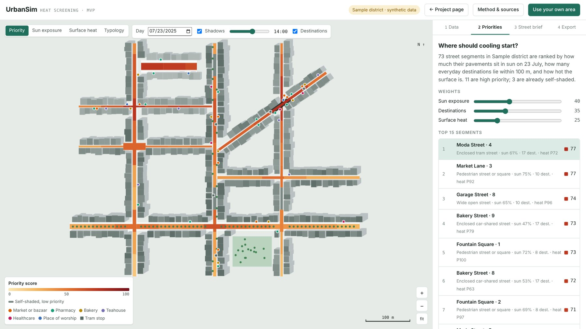
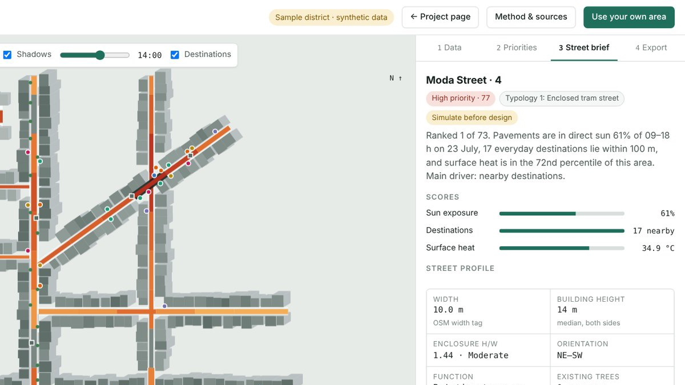

UrbanSim
A heat screening tool that shows planners where urban heat meets everyday life, and which nature-based solutions fit each street, with the evidence behind every suggestion.

Nature-based solutions are widely promoted for cooling cities, but planners lack a simple way to decide where to put them first and which ones fit a given street. Simulation tools test a design once it exists. NBS catalogues list measures without reference to place or people.
Heat is where the gap is widest. Boverket's 2025 review of 75 Swedish comprehensive plans found that heat is mostly addressed in general terms: only 10–15% of municipalities show heat-related risks or measures on a plan map, against more than 60% for cloudburst flooding (Boverket, 2025).

Funded by Sustainability Leapfrogs
UrbanSim received a summer scholarship of 40,000 SEK from the Sustainability Leapfrogs programme at LU Innovation, Lund University. Working alone, I developed the pitch and a first prototype over the summer and reported progress monthly.
UrbanSim grew out of a step I had to leave outside my MSc thesis. My original thesis proposal also aimed to test how the chosen nature-based solutions would perform under future climate conditions, but the scope and time of a master's thesis did not allow it. The question stayed with me: will the solutions we choose today still work, and at what cost, in the years ahead?
The first UrbanSim proposal was therefore broad: an online platform where anyone could pick a location on a 3D map, run environmental simulations without specialist software, and get AI recommendations of nature-based solutions for a range of urban challenges.
To find out what was actually missing, I met relevant departments at Lund and Malmö municipalities and reviewed the proposal from the seat of a municipal climate adaptation planner. I also narrowed the scope to one challenge, urban heat, so that a working MVP was possible; flooding is the next challenge to add. Four changes followed:
1. Screening, not simulation. Fast wind and thermal comfort simulation already exists in tools such as Autodesk Forma and Infrared City. UrbanSim does the step before: where to act first and what fits there, flagging the streets that need detailed modelling.
2. People in the analysis. Priority comes from where heat meets everyday destinations and the walking routes between them, the method of my MSc thesis.
3. Street feasibility. Every street gets a profile (width, H/W, orientation, function) and a typology, so suggestions respect tram tracks, parking lanes and narrow pavements.
4. Traceable recommendations. Written rules replace a black-box AI. Every suggestion cites its source and an evidence grade, and no temperature reduction is shown unless it can be sourced or computed.
The MVP runs entirely in the browser and follows the order in which a planner works:
1. Data. OpenStreetMap buildings, streets, tram lines, destinations and trees, exported with a supplied query, plus optional surface heat from a Google Earth Engine script that builds a ten-summer Landsat median.
2. Priorities. Street segments of about 50 m are ranked by how much of their pavement is in direct sun from 09:00 to 18:00 on a chosen day (ray-traced against building heights), the everyday destinations within 100 m, and the surface heat percentile. The weights are adjustable.
3. Street brief. Width measured façade to façade, enclosure, orientation and typology, with the seven tools of the thesis NBS toolbox checked against each street.
4. Export. GeoJSON for QGIS or ArcGIS, a CSV table and a text brief for each street.
It opens on a synthetic sample district whose street dimensions follow the street sections surveyed in the thesis.

The next phase is to test the heat screening with planners in Skåne municipalities on their own districts, then add cloudburst flooding, uploads of municipal data and population layers.
The core of the next phase is the NBS library. Many nature-based solutions still have only guidance-level or assumed evidence for pedestrian cooling, so the library has to be built as research: documented projects, their street conditions and their measured performance, graded by evidence. I aim to develop it with academic partners, building on my work in the AIM-NBS project, and then train a model on it that recommends suitable NBS for each street, while keeping every recommendation traceable to its sources.
The library should also record what each solution needs over time: irrigation, maintenance and who is responsible for it. Whether a nature-based solution still performs after ten years depends as much on how it is managed as on how it was designed, and a decision-support tool only helps if the organisations that use it can act on its results. Recording long-term performance and upkeep is what would let UrbanSim answer its original question: whether today's choices will still work, and at what cost, in the future.